Complex Number and simple Calculate:
First Definition（定义）:
1: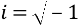
2: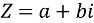（a 是实部，b 是虚部 ）
3: Complex plane（复素平面）
x-axis is Real part（实部），y-axis is Image part（虚部）：
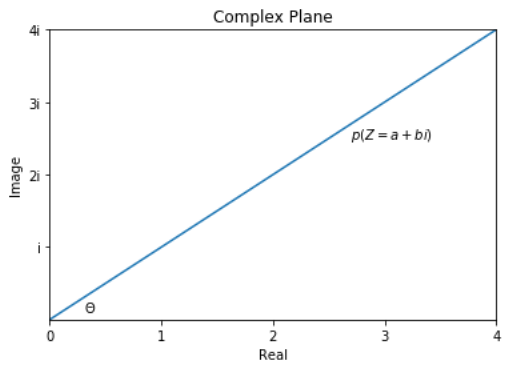
Let this line (p)’s length Is R,
1) 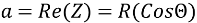
2) 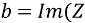)= 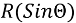
3) 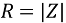
4) 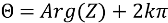 (Arg: Argument 幅角)
5) 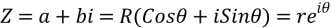=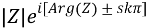
4:Conjugate(共轭)：
If 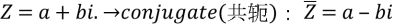.
1）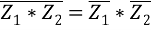 （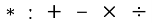）
2）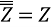
3）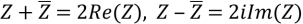
4) 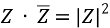
Second. Calculate:
1:Algebra（代数运算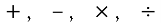）
Let 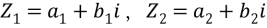
1) 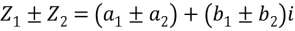
2) 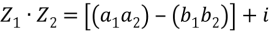
3) 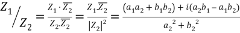
2: Trigonometry (三角运算)
Let 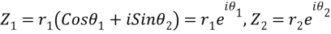
1) 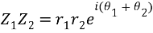
2) 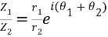
3) 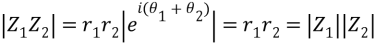 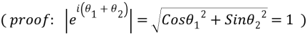
4) 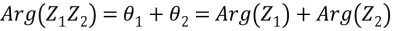
5) Revolve(旋转)：
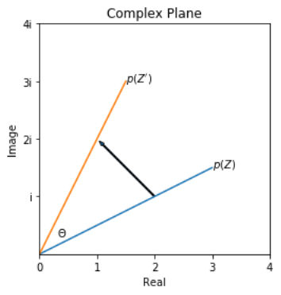
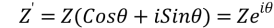
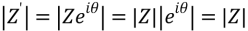
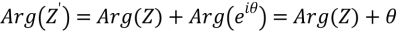
(Plus: About the real number revolve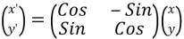)
De Moivre's theorem :
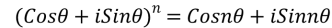
Proof: Binomial theorem